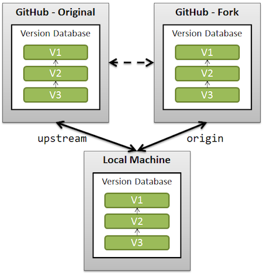

Forking vs. Branching in GitHub
I'd like to know more about the advantages and disadvantages of forking a github project vs. creating a branch of a github project.
Forking makes my version of the project more isolated from the original one because I don't have to be on the collaborators list of the original project. Since we're developing a project in house, there is no problem in adding people as collaborators. But, we'd like to understand if forking a project would make merge changes back to the main project harder. That is, I wonder if branching makes keeping the two projects in sync easier. In other words, is it easier to merge and push changes between my version of the main project and the main project when I branch?
Answer
You cannot always make a branch or pull an existing branch and push back to it, because you are not registered as a collaborator for that specific project.
Forking is nothing more than a clone on the GitHub server side :
- without the possibility to directly push back
- with fork queue feature added to manage the merge request
You keep a fork in sync with the original project by:
- adding the original project as a remote
- fetching regularly from that original project
- rebase your current development on top of the branch of interest you got updated from that fetch.
The rebase allows you to make sure your changes are straightforward (no merge conflict to handle), making your pulling request that more easy when you want the maintainer of the original project to include your patches in his project.
The goal is really to allow collaboration even though direct participation is not always possible.
The fact that you clone on the GitHub side means you have now two "central"
repository ("central" as "visible from several collaborators).
If you can add them directly as collaborator for one project, you don't need
to manage another one with a fork.

The merge experience would be about the same, but with an extra level of
indirection (push first on the fork, then ask for a pull, with the risk of
evolutions on the original repo making your fast-forward merges not fast-
forward anymore).
That means the correct workflow is to git pull --rebase upstream (rebase
your work on top of new commits from upstream), and then git push --force
origin, in order to rewrite the history in such a way your own commits are
always on top of the commits from the original (upstream) repo.
See also:
- Git fork is git clone?
- Pull new updates from original Github repository into forked Github repository
Suggest
Here are the high-level differences:
Forking
Pros
- Keeps branches separated by user
- Reduces clutter in the primary repository
- Your team process reflects the external contributor process
Cons
- Makes it more difficult to see all of the branches that are active (or inactive, for that matter)
- Collaborating on a branch is trickier (the fork owner needs to add the person as a collaborator)
- You need to understand the concept of multiple remotes in Git
- Requires additional mental bookkeeping
- This will make the workflow more difficult for people who aren't super comfortable with Git
Branching
Pros
- Keeps all of the work being done around a project in one place
- All collaborators can push to the same branch to collaborate on it
- There's only one Git remote to deal with
Cons
- Branches that get abandoned can pile up more easily
- Your team contribution process doesn't match the external contributor process
- You need to add team members as contributors before they can branch